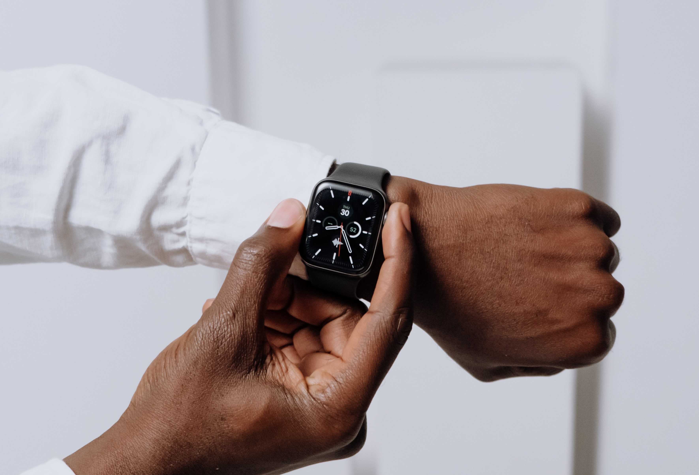

What is your style?
 I prefer spending time alone quietly rather than spending time with lots of people.
I prefer to take responsibility for all of my actions.
I prefer telling the truth even if I get damages rather than telling lies to benefit me.
I prefer spending time alone quietly rather than spending time with lots of people.
I prefer to take responsibility for all of my actions.
I prefer telling the truth even if I get damages rather than telling lies to benefit me.
What do you value?

The most important value is keeping the appointments.
The most important value is keeping the appointments.
Honesty is also important.
When is the best time to approach you?
 The best time to contact me is before dinner time.
Many people spend time with their families at dinner. I don't want to disturb other people's precious time.
Therefore, I don’t like to interpret my important time from others.
The best time to contact me is before dinner time.
Many people spend time with their families at dinner. I don't want to disturb other people's precious time.
Therefore, I don’t like to interpret my important time from others.
How do you like people to communicate with you?
 When I talk to people, I prefer to talk face-to-face or text messages rather than talk on the phone.
When I talk to people, I prefer to talk face-to-face or text messages rather than talk on the phone.
How do you make decisions?
I don't have unnecessary worries when making a decision.
Even if I made wrong results because of my decisions, I do not regret my decisions.
What do people misunderstand about me?
Many people think I like to go out and spend time with other people than staying at home.
How can people help you?
I prefer helping others,not get a help from others.
I feel happy by helping others.
At the same time, when you get help from others, you feel sorry because you seem to be causing trouble to others.